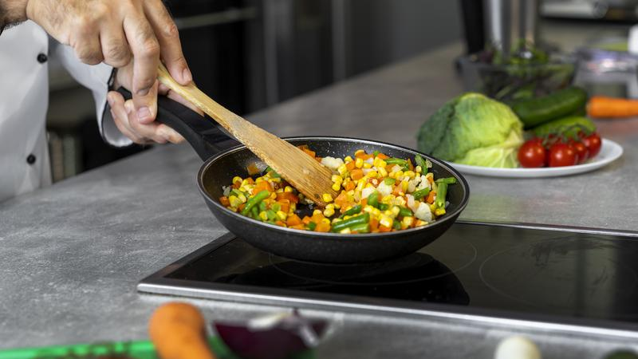

Rahasia Tumisan Lebih Harum
Panaskan wajan sampai benar-benar panas, masukkan bumbu aromatik di saat yang tepat, aduk cepat sebentar saja aroma langsung meledak dan seluruh masakan jadi jauh lebih wangi!

Tips & Trick Praktis
- Panaskan wajan sampai benar-benar panas.
- Tambahkan sedikit minyak, biarkan sampai berasap tipis.
- Masukkan bawang putih terlebih dulu (api sedang).
- Tambahkan bawang merah setelah aroma bawang putih keluar.
- Tambahkan jahe / lengkuas / sereh bila dipakai.
- Masukkan cabai terakhir agar aromanya segar.
- Jangan terlalu penuh wajan (agar tidak berair).
- Tumis dengan api besar untuk “wok hei” (aroma asap khas).
- Beri sedikit garam di awal untuk mengeluarkan aroma.
- Aduk cepat agar tidak gosong bagian bawah.
- Tambahkan kecap/saus setelah bumbu harum.
- Akhiri dengan sedikit minyak wijen untuk wangi.
- Angkat segera setelah aroma maksimal.
← Kembali ke Simfoni Rasa